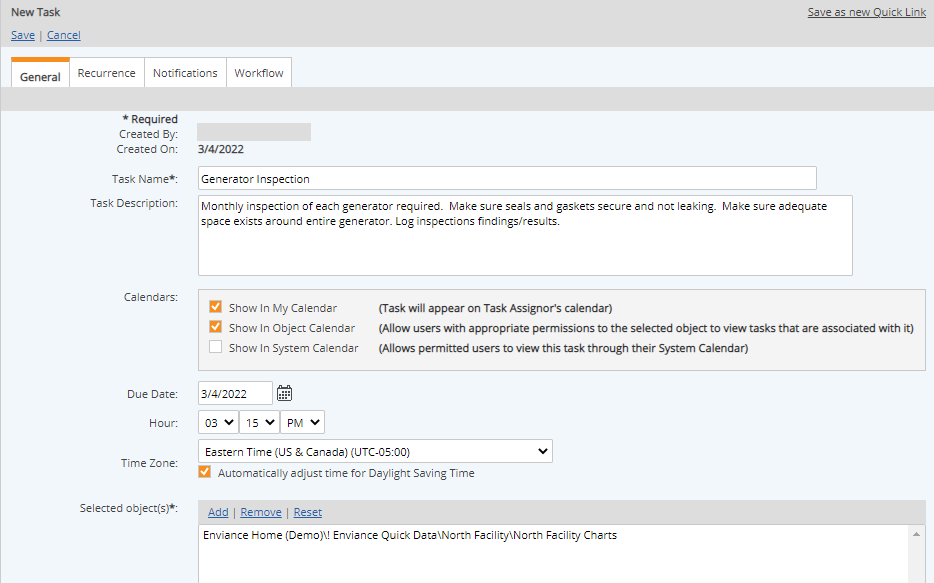

Tasks may be associated with system model tree objects or with requirements.
A Task Template may be used to define calendar options, associated documents, task notifications, and optional workflow to be triggered.
To create a new task:
Right click the object with which the task is to be associated and choose New > Task.
For a multi-object task, select the checkboxes for all requirements in the Applicable Requirements view, then right click and choose New > Task. (A maximum of 50 objects per task is recommended).
You can create a task for a non-numeric requirement at the same time as you create the requirement by checking the Create Task box at the bottom of the properties form before saving. After the requirement is saved, the task form will appear.
Select a Task Template from the dropdown list , or leave blank if no template is to be applied. Click Next.
The following tabs are available:
General: The general information for a task includes the task name, description, assignee(s), associated documents, and due date (for a simple, single-occurrence task). Calendars and Documents will be read-only if a Task Template is used.
Recurrence: Contains the schedule details for recurrent tasks.
Notification: Task reminders, and overdue or status notifications may be set up based on task activity or schedule. Tab will be view-only if a Task Template is used.
Workflow: Specifies a workflow to be associated with the task. Tab will be view-only if a Task Template is applied.

In the General tab, complete the required fields, indicated with an asterisk, and other fields as appropriate:
Task Name: The task name appears on all task notifications, lists, and calendar items. When you create a task associated with a non-numeric Requirement, the task name defaults to the Requirement name.
Tasks that will be associated with workflows must not contain any special characters. Although older tasks may include certain special characters ('/' , ‘\’ , ‘]’ , ‘[’), these are no longer allowed and editing the task will require that the name be changed.
Task Description: The description is the default content of the message that is shown in a standard task notification, if no Task Notification Template is applied, so it typically contains instructions for completing the task. When you create a task associated with a non-numeric Requirement, the task description defaults to the Requirement description.
Calendars: (Not editable when a Task Template is used.) Select the appropriate calendar display options. The task will appear by default in the assignee’s calendar.
Due Date/Time These fields are used to set the due date and time only if the task is a one-time task. For a recurrent task set the recurrence schedule in the Recurrence tab.
Time Zone: For the time zone, select the time zone where the task is to be completed. Default is the task creator's time zone, so if you are creating tasks for users in other time zones be sure to change this field accordingly. You may also choose whether to adjust for daylight savings. (See Task Schedules and Time Changes.)
Selected Objects: Shows the objects with which the task is associated. Click Add to add additional objects.
Assignor: Defaults to task creator. Click Assignor to select a different assignor.
Assign task to: Click the Add link for Users or Groups and select the users or groups from the selection window. (If a Responsible User has been designated for an object, the Assignee will default to that user but may be overridden.)
Documents: (Not editable when a Task Template is used.) Optionally, attach documents to the task. See Associate Documents with a Task.
Select the Recurrence tab to set up the task schedule for a recurrent task. See Set Task Recurrence Schedule.
Select the Notifications tab to set up task notifications. See Add/Edit Task Notifications. If a task template is used, the notifications are defined on the task template and will be read only.
Select the Workflows tab to specify a workflow instance to be created and associated with the task. See Task Triggered Workflows. If a task template is used, the workflow is defined on the task template and will be read only.